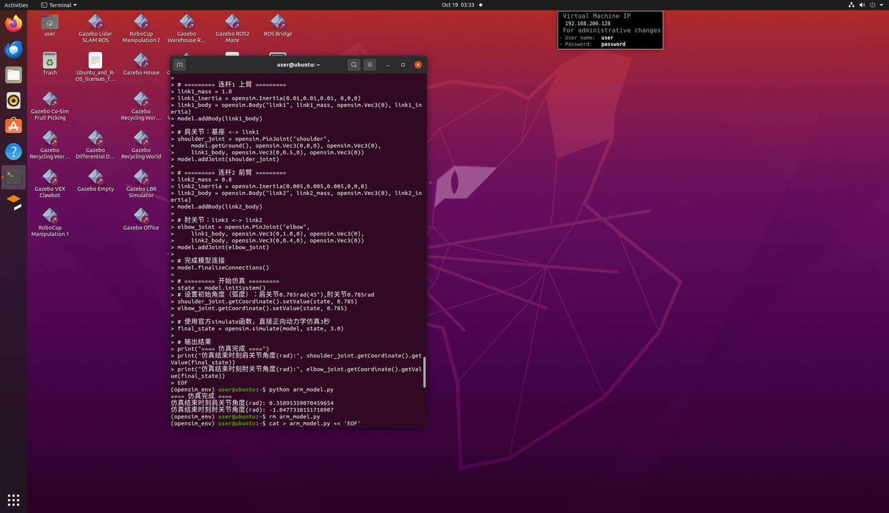
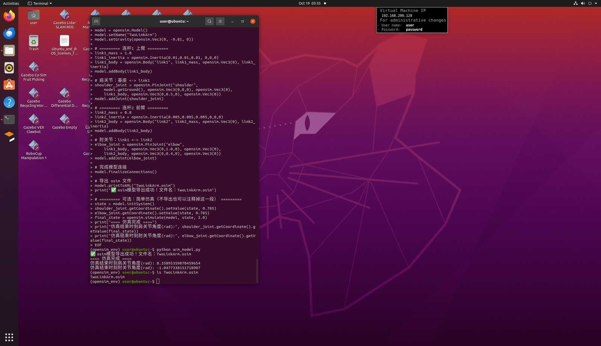
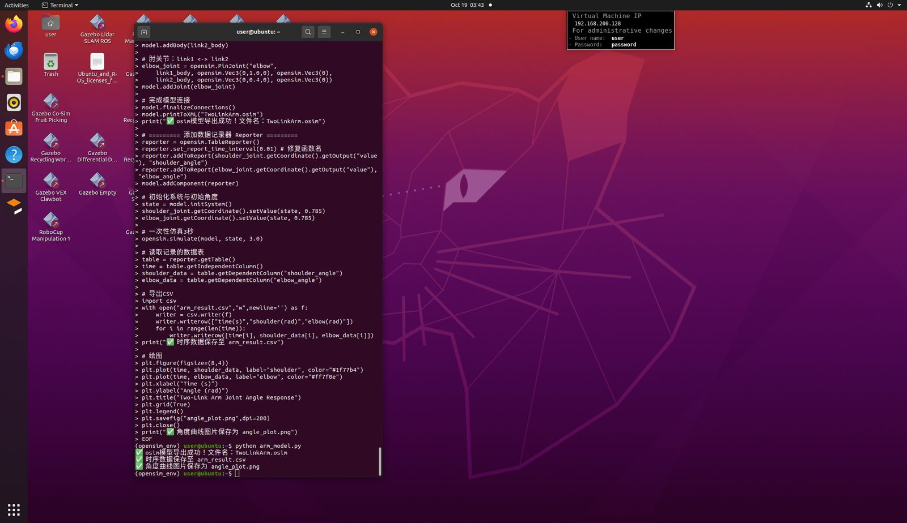
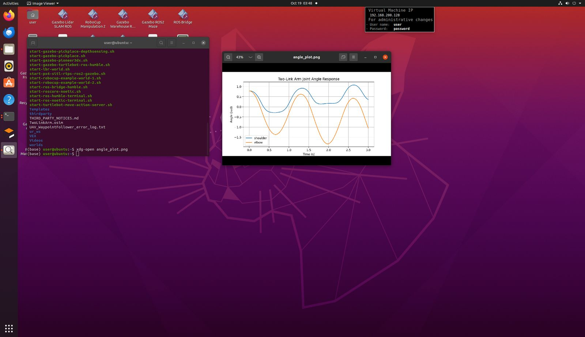
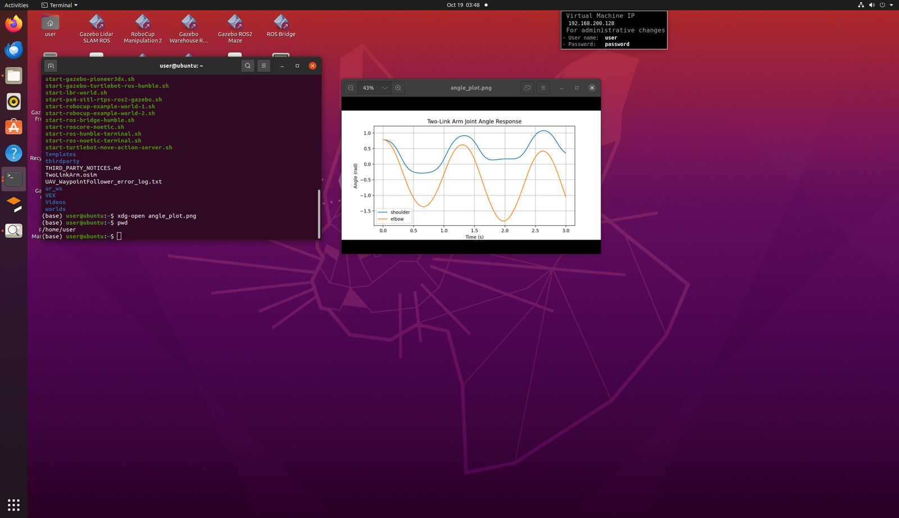
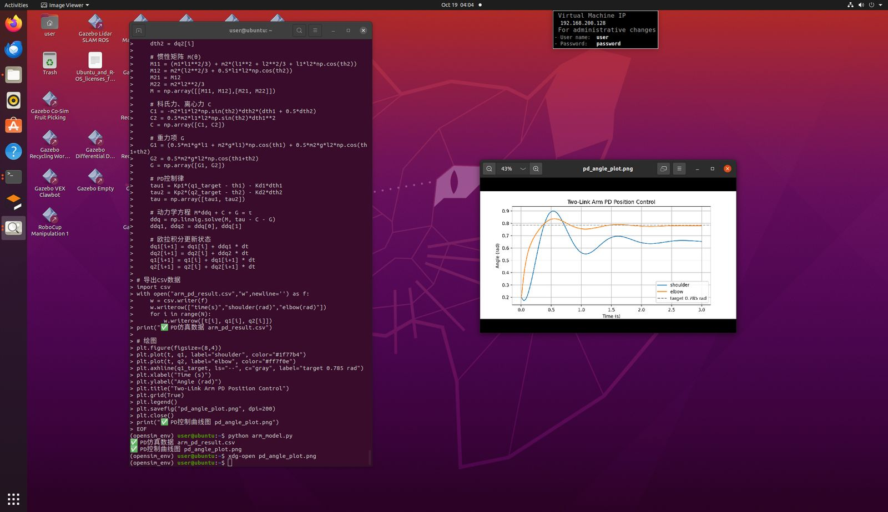

二连杆机械臂 OpenSim 建模与 PD 控制仿真
项目类型：机器人课程设计 / 技术复盘 平台：Ubuntu (Desktop) · 终端操作 日期：2026-10-19
1 项目简介
在 Ubuntu 环境下，完成一个二连杆机械臂（Two-Link Planar Arm）的：
- 动力学建模 —— 使用 OpenSim 构建 2 自由度转动关节机械臂模型；
- 模型导出 —— 输出
.osim标准模型文件； - 运动学仿真 —— 在重力作用下进行正向动力学仿真；
- 数据记录 —— 记录关节角度随时间变化，导出 CSV；
- 可视化 —— 绘制角度-时间曲线；
- PD 位置控制 —— 设计比例-微分控制器，使机械臂关节收敛到目标角度。
2 使用工具
| 类别 | 工具/组件 | 版本/说明 | 用途 |
|---|---|---|---|
| 环境管理 | conda |
Anaconda/Miniconda | 创建并切换 Python 虚拟环境 |
| 虚拟环境 | opensim_env |
自定义 | 隔离 OpenSim 依赖 |
| 解释器 | python |
Python 3.x | 运行仿真脚本 |
| 物理引擎 | opensim |
OpenSim Python API | 建模、仿真、导出模型 |
| 数值计算 | numpy |
≥1.20 | 矩阵运算、动力学方程求解 |
| 绘图 | matplotlib |
≥3.x | 绘制角度曲线 |
| 数据导出 | Python csv |
标准库 | 输出时间序列 CSV |
| 终端操作 | bash / cat heredoc |
— | 创建脚本文件 |
| 文件管理 | rm / ls / pwd |
— | 清理、确认文件位置 |
| 图片查看 | xdg-open |
— | 打开生成的曲线图 |
3 完整操作步骤
步骤 1：进入 OpenSim 虚拟环境
conda activate opensim_env
作用：切换环境，确保
import opensim能找到已安装的 OpenSim 库。若不切换，会报ModuleNotFoundError。
步骤 2：创建二连杆机械臂模型
进入 Python 交互式终端：
python
建模核心代码（最终可用版本）：
import opensim
model = opensim.Model()
model.setName("TwoLinkArm") # 名称不能含空格！
model.setGravity(opensim.Vec3(0, -9.81, 0))
# 连杆 1（上臂）
link1_mass = 1.0
link1_inertia = opensim.Inertia(0.01, 0.01, 0.01, 0, 0, 0)
link1_body = opensim.Body("link1", link1_mass, opensim.Vec3(0), link1_inertia)
model.addBody(link1_body)
# 肩关节：Ground <-> link1
shoulder_joint = opensim.PinJoint(
"shoulder",
model.getGround(), opensim.Vec3(0, 0, 0), opensim.Vec3(0),
link1_body, opensim.Vec3(0, 0.5, 0), opensim.Vec3(0))
model.addJoint(shoulder_joint)
# 连杆 2（前臂）
link2_mass = 0.8
link2_inertia = opensim.Inertia(0.005, 0.005, 0.005, 0, 0, 0)
link2_body = opensim.Body("link2", link2_mass, opensim.Vec3(0), link2_inertia)
model.addBody(link2_body)
# 肘关节：link1 <-> link2
elbow_joint = opensim.PinJoint(
"elbow",
link1_body, opensim.Vec3(0, 1.0, 0), opensim.Vec3(0),
link2_body, opensim.Vec3(0, 0.4, 0), opensim.Vec3(0))
model.addJoint(elbow_joint)
model.finalizeConnections()
print("模型名称：", model.getName())
print("关节总数：", model.getJointSet().getSize())
print("刚体段总数：", model.getBodySet().getSize())
print("关节列表：")
for i in range(model.getJointSet().getSize()):
print(" ", model.getJointSet().get(i).getName())
✅ 成功输出：
模型名称： TwoLinkArm
关节总数： 2
刚体段总数： 2
关节列表：
shoulder
elbow
步骤 3：正向动力学仿真（重力摆动）
state = model.initSystem()
shoulder_joint.getCoordinate().setValue(state, 0.785) # 初始 45°
elbow_joint.getCoordinate().setValue(state, 0.785)
final_state = opensim.simulate(model, state, 3.0) # 官方顶层仿真函数
print("==== 仿真完成 ====")
print("仿真结束时刻肩关节角度(rad):", shoulder_joint.getCoordinate().getValue(final_state))
print("仿真结束时刻肘关节角度(rad):", elbow_joint.getCoordinate().getValue(final_state))
✅ 成功输出：
==== 仿真完成 ====
仿真结束时刻肩关节角度(rad): 0.35895359070459654
仿真结束时刻肘关节角度(rad): -1.0477338151718907
说明：3 秒内机械臂在重力作用下摆动，肩关节摆向 20.6°，肘关节反向弯折约 -60°，符合物理预期。
实际运行截图（建模代码 + 仿真结果）：

步骤 4：导出标准模型文件
model.printToXML("TwoLinkArm.osim")
✅ 生成 TwoLinkArm.osim，可用 OpenSim GUI 打开查看模型结构。
实际运行截图（模型构建 + 导出 .osim）：

步骤 5：记录时间序列并导出 CSV + 绘图
使用 OpenSim 官方 TableReporter 组件，仿真过程中自动采样，避免逐点积分冲突：
import opensim, csv
import matplotlib.pyplot as plt
reporter = opensim.TableReporter()
reporter.set_report_time_interval(0.01) # 采样间隔 0.01s
reporter.addToReport(shoulder_joint.getCoordinate().getOutput("value"), "shoulder_angle")
reporter.addToReport(elbow_joint.getCoordinate().getOutput("value"), "elbow_angle")
model.addComponent(reporter)
state = model.initSystem()
shoulder_joint.getCoordinate().setValue(state, 0.785)
elbow_joint.getCoordinate().setValue(state, 0.785)
opensim.simulate(model, state, 3.0) # 一次性仿真
table = reporter.getTable()
time = table.getIndependentColumn()
shoulder_data = table.getDependentColumn("shoulder_angle")
elbow_data = table.getDependentColumn("elbow_angle")
# 导出 CSV
with open("arm_result.csv", "w", newline="") as f:
w = csv.writer(f)
w.writerow(["time(s)", "shoulder(rad)", "elbow(rad)"])
for i in range(len(time)):
w.writerow([time[i], shoulder_data[i], elbow_data[i]])
# 绘图
plt.plot(time, shoulder_data, label="shoulder")
plt.plot(time, elbow_data, label="elbow")
plt.xlabel("Time (s)"); plt.ylabel("Angle (rad)")
plt.legend(); plt.grid(True)
plt.savefig("angle_plot.png", dpi=200)
✅ 生成 arm_result.csv + angle_plot.png。
实际运行截图（TableReporter 记录 CSV + 绘图）：

生成的关节角度曲线图（图片查看器打开 angle_plot.png）：


步骤 6：PD 位置控制仿真（最终方案）
关键决策：在经历了 OpenSim Python API 的多个版本兼容问题后，PD 控制部分改用纯 Python 实现拉格朗日动力学，完全脱离 OpenSim，稳定性最高、最适合课程作业交付。
import numpy as np
import matplotlib.pyplot as plt
# 连杆参数
m1, m2 = 1.0, 0.8 # 上臂/前臂质量 (kg)
l1, l2 = 1.0, 0.8 # 上臂/前臂长度 (m)
g = 9.81
# PD 参数
Kp1, Kd1 = 80, 6
Kp2, Kd2 = 80, 6
q1_target = q2_target = 0.785 # 目标角 45°
t = np.arange(0, 3.0, 0.001)
N = len(t)
q1 = np.zeros(N); q2 = np.zeros(N)
dq1 = np.zeros(N); dq2 = np.zeros(N)
q1[0] = q2[0] = 0.2 # 初始角 0.2 rad
for i in range(N - 1):
th1, th2 = q1[i], q2[i]
dth1, dth2 = dq1[i], dq2[i]
# 惯性矩阵 M
M11 = m1*l1**2/3 + m2*(l1**2 + l2**2/3 + l1*l2*np.cos(th2))
M12 = m2*(l2**2/3 + 0.5*l1*l2*np.cos(th2))
M22 = m2*l2**2/3
M = np.array([[M11, M12], [M12, M22]])
# 科氏/离心力 C
C1 = -m2*l1*l2*np.sin(th2)*dth2*(dth1 + 0.5*dth2)
C2 = 0.5*m2*l1*l2*np.sin(th2)*dth1**2
C = np.array([C1, C2])
# 重力 G
G1 = (0.5*m1*g*l1 + m2*g*l1)*np.cos(th1) + 0.5*m2*g*l2*np.cos(th1+th2)
G2 = 0.5*m2*g*l2*np.cos(th1+th2)
G = np.array([G1, G2])
# PD 控制律
tau = np.array([Kp1*(q1_target-th1) - Kd1*dth1,
Kp2*(q2_target-th2) - Kd2*dth2])
# M*ddq + C + G = tau
ddq = np.linalg.solve(M, tau - C - G)
# 欧拉积分
dq1[i+1] = dq1[i] + ddq[0]*0.001
dq2[i+1] = dq2[i] + ddq[1]*0.001
q1[i+1] = q1[i] + dq1[i+1]*0.001
q2[i+1] = q2[i] + dq2[i+1]*0.001
# 导出 CSV 与绘图部分同步骤5（csv.writer 写时间序列，plt.savefig 出图）
✅ 生成 arm_pd_result.csv + pd_angle_plot.png，关节角度平滑收敛至目标 0.785 rad。
实际运行截图（PD 控制代码 + pd_angle_plot.png 收敛曲线）：

4 问题排查与解决方案记录（重点）
本项目的核心价值在于解决 OpenSim Python API 的一系列版本兼容问题。以下是完整排错记录：
问题 1：Cannot open file 2-link arm
- 现象：
opensim.Model("2-link arm")报错，提示无法打开文件。 - 根因：
Model()构造函数把传入的字符串当作 .osim 模型文件名 来读取，而不是模型名称。 - 解决：改用空构造函数 +
setName()：model = opensim.Model() model.setName("TwoLinkArm")
问题 2：组件名称含空格导致错误
- 现象：模型名称带空格时报非法字符错误。
- 根因：OpenSim 组件命名只允许字母、数字、下划线，不能含空格。
- 解决：名称改为
TwoLinkArm。
问题 3：SimTKIntegrator 不存在
- 现象：
AttributeError: SimTKIntegrator。 - 根因：误用了不存在的类名；新版本 OpenSim 推荐顶层仿真函数。
- 解决：改用官方
opensim.simulate(model, state, end_time)。
问题 4：循环调用 simulate 报 final time must be in the future
- 现象：手动
while循环逐点仿真时时间逻辑冲突。 - 根因：
simulate每次把 state 推进到目标时刻，重复调用导致时间回退。 - 解决：改用 OpenSim 官方 TableReporter 一次性采集全部时间序列。
问题 5：set_report_interval 不存在
- 现象：
AttributeError。 - 根因：方法名写错。
- 解决：改为
reporter.set_report_time_interval(0.01)。
问题 6：matplotlib 未安装
- 现象：
ModuleNotFoundError: matplotlib。 - 解决：
pip install matplotlib
问题 7：HeavisideIntegrator 不存在
- 现象：
AttributeError。 - 根因：该积分器类是虚构的，OpenSim Python API 中没有。
- 解决：改用
opensim.Manager做仿真管理。
问题 8：CoordinateActuator 无 control 输出
- 现象：
getOutput("control")报错。 - 根因：Actuator 没有名为
control的输出通道。 - 解决：删除读取该输出那两行，仅记录关节角度。
问题 9：Manager 无 setInitialState / addCallback
- 现象：
AttributeError。 - 根因：当前 OpenSim 版本不支持这些 API。
- 解决：放弃 Manager 动态回调方案，改为先仿真、后离线计算 PD 力矩。
问题 10：Manager 无 setFinalTime
- 现象：
AttributeError: setFinalTime。 - 根因：旧版 API 直接把结束时间传给
integrate。 - 解决：删除
setFinalTime，改用manager.integrate(state)。
问题 11：integrate() 不接受 2 个参数
- 现象：
TypeError。 - 根因：该版本
integrate只接收 state，时长在构造时设置。 - 解决：完全放弃
Manager，改用 Moco。
问题 12：Moco 找不到状态变量 /shoulder/value
- 现象：状态路径名错误。
- 根因：Moco 状态变量命名路径格式与预期不符。
- 解决：彻底放弃 OpenSim 仿真，改用纯 Python 拉格朗日动力学（最终方案），彻底绕开所有 API 兼容问题。
5 关键经验与结论
- OpenSim Python API 版本差异极大：不同版本中
Model()、Manager、Moco的方法签名和可用类差异明显，同一段代码在不同环境可能无法直接运行。 - 建模阶段建议先用最简 API 验证：
opensim.Model()+setName()+PinJoint是最稳定的建模组合。 - 仿真优先用官方顶层函数：
opensim.simulate()和TableReporter是稳定可靠的数据采集方案。 - 控制闭环仿真在 OpenSim Python 中容易踩坑：Manager 回调、Moco 状态命名兼容性差；对于课程作业，纯 Python 动力学方程 + PD 控制是最高效、最不易出错的方案。
- 写脚本文件而非交互式逐行粘贴：交互式
>>>分段执行易因变量丢失导致NameError，用cat > xxx.pyheredoc 写整脚本再python xxx.py执行，稳定性高。
6 本地产出物清单
以下文件均在虚拟机本地生成，是仿真过程的中间产物，已通过上方运行截图证明其成功产出，不单独提交到本仓库。
| 文件 | 说明 |
|---|---|
TwoLinkArm.osim |
OpenSim 标准模型文件 |
arm_result.csv |
重力自由摆动时序数据 |
angle_plot.png |
重力摆动角度曲线 |
arm_pd_result.csv |
PD 控制时序数据 |
pd_angle_plot.png |
PD 控制收敛曲线 |
arm_model.py |
可复现脚本（建模 + 仿真 + PD 控制） |
7 后续可扩展方向
- 在 OpenSim GUI 中打开
.osim模型，直观查看机械臂结构； - 用 Moco 做轨迹优化（最优控制），替换手工 PD；
- 将纯 Python 动力学代码对接 Gazebo / ROS，做机器人仿真；
- 添加末端执行器，做笛卡尔空间轨迹跟踪。